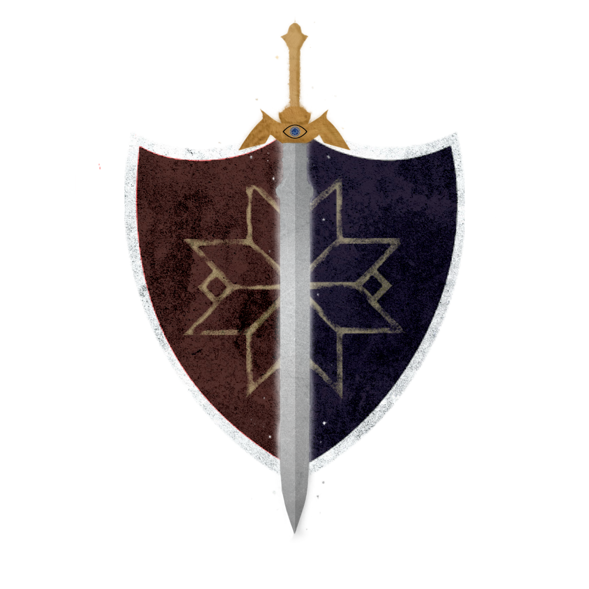
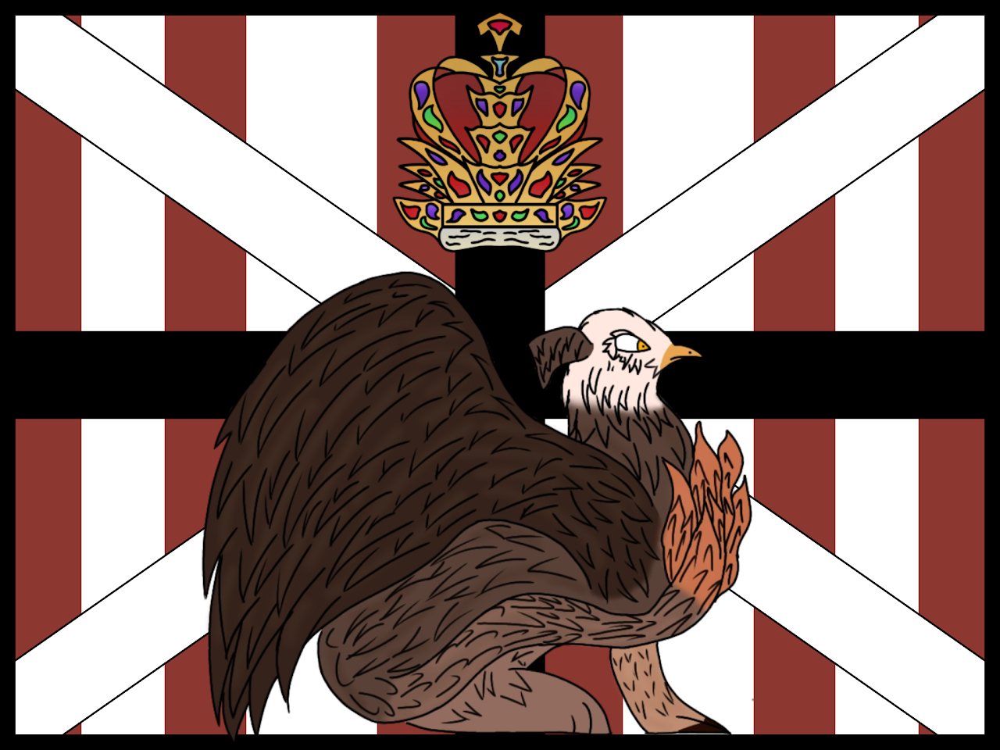
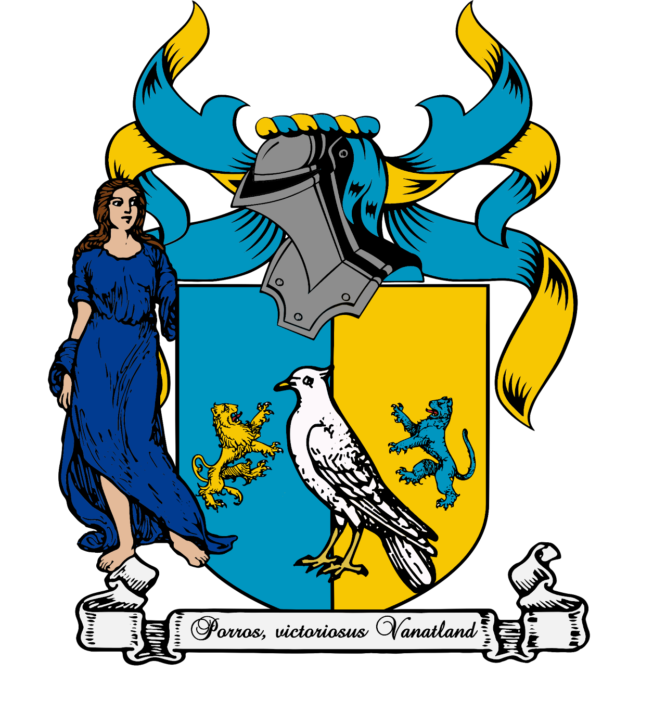
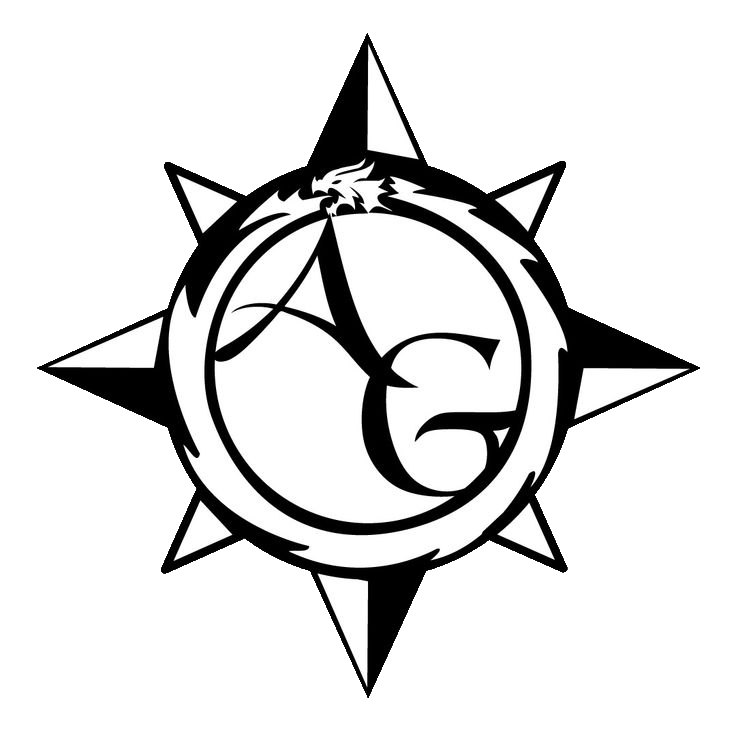
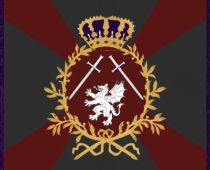

Notable Factions

Graia - City State/Kingdom - Lawful Evil
Graia is a city-state that was raised by outcasts of King's Gate, mostly mages, fleeing from witchcraft persecutions 5 centuries ago. They fled to what is called the 'Lands Beyond' ,Trying to make a place they could truthly call "Home" over it. Only in the recent 2 centuries did the splintered mages unite, putting all colonists under one banner, and the following goals; Prosperity, Safety, Unity. Now, Graia is coming back to King's Gate after years of isolation, ready to show the world what prosperity looks like. Some argue that they will show not only prosperity... but vengeance.Graians seem to follow the teachings of Trinitism, a smaller religion consisting of a pantheon of 3 deities within the realm.
This faction follows a late medieval aesthetic with fantastic elements (Knights, Paladins, battle-mages, custom faith, enchanted knights, dragon riders, etc.). The general soldier aesthetic tends into the terrain of western Europe.
Discord Invite:

The Empire of Redthorne
The Empire of Redthorne is a globe-spanning empire, with a professional army, powerful navy, several colonies and on the brink of economic disaster. 10 years of a hard-fought war had drained the empire’s coffers. Trouble at home has also meant that they have undergone radical government change, going from an absolute monarchy to a democracy back to an autocracy meant that unrest at home is also high, with people fed up with the current economic crisis.
The First Emperor of Redthorne authorized the deployment of the 3rd Western Expeditionary Brigade to a recently charted island that the Imperial Navy of Redthorne had landed parties on. Reports suggest that it is a dangerous land, but also full of promise, with huge potential for trade and resources that can help keep them afloat until economic reform fully takes effect. Only time will tell whether the island will make or break the empire. This faction follows Napoleonic-era aesthetics with fantasy elements mixed in (such as magic muskets, mages, dragons and more.)
Discord Invite:

The Vanatland Empire
The Vanatland Empire was formed in the land of Columba, an island located in the Northern Hemisphere. A combination of Northern, Western, and Southern Europe in terms of land mass. Formerly called the Columba's Divinitas Council, run by the Yaklob brothers (Paverion, Cato, and Marius), to fight against the oppressive rules of other local lords. After a 5-year-long conflict, the council took over the entirety of Columba, revamping their monarch system to abolish serfdom, reinforcing gender equality, reopening trade routes, and, on top of that, imposing harsh punishment on any lords who mistreated their people. The Vanatians' new model army utilizes Pike and shot tactics, with the addition of mages and beasts unit to further boost their strength. But you'll also see a mix of 14th-16th-century knights in our ranks, since we're quite conservative about our old military tradition.
In our calendar year, 1688, a small galley of explorers and marines discovered an unnamed island. Over there, they made trades, pacts, and formed friendships with a lot of friendly coastal tribes, but years later, they went silent. A navy detachment was also sent there to investigate; they, too, never returned. The King himself ordered 3 Foot regiments, 1 Horse regiment, and a small navy fleet to be sent over there as an Expeditionary crew. Their job? to investigate the disappearance of their countrymen and bring them back home. Join us in bringing our men and women back to their homes safely.
Discord Invite:

The Adventurers Guild
The Adventurer’s Guild is the oldest and largest non-political force on the island,
serving its place as the cross between civilian life and the dangers of the world. Founded 4 centuries ago among concerns and desires for a force that could quickly respond to threats with minimal cost after the kingdom failed to respond to a dungeon fast enough.Continuously growing, the guild has expanded to a common name among life. Serving the people where they need and taking care of the tasks too small or time consuming to the government or militaries, instead handing these tasks to members with the promise of retaining any treasure they find be it gold or magic items.
The guild currently resides mainly in a complex tavern in the capital city which serves as the meeting ground for the guild. They have functional ranks, and missions and offer work to anyone willing, with the promise of riches and fame.
Discord Invite:

Kingdom of Hyrea - Mercenary Company
The Kingdom of Hyrea lay just two weeks west of the land of King's Gate on a separate continent known as Eastrul.
For just a few hundred years, a relative peace lay upon the nations under a golden age of technological and cultural developments.
However, under the tales of old, the warmongering King began to prepare an invasion of the North.
The Queen was soon forced to intern her husband in the name of peace and the civil war began.
After 12 long years,
the war finally ended and reconstruction could commence.
However, the Kingdom was never allowed to rest. Currently, Hyrea faces issues both international and domestic.
A war rages in the south from the Huang Dynasty who took advantage of the Kingdom's weakened state, taking territory from the exhausted nation.
Meanwhile, the growing Automation party engages in deadly skirmishes with mages in the streets of some cities.
But regardless, the 5,000 merchants, soldiers, and even former King Loyalists set sail to King's Gate.
Through mercenary contracts, trade, and quests, the Hyreans remain with loyal to just three things in this land.
The spirit of the nation, the Great Dragon, and coin.
This faction caters towards a more medieval Eastern European and Russian aesthetic with some Victorian sprinkled in alongside fantasy aspects.
Discord Invite: